“除了‘全员系列’和加拿大鹅，
还有什么比较狠的羽绒服？”观看视频 ↗
羽绒服案例：借熟悉品牌，打开新的品牌故事
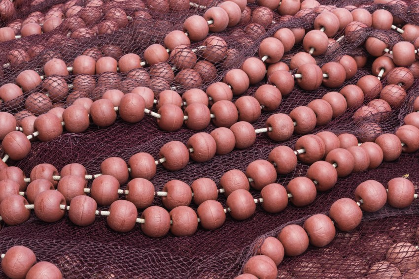
用原料的反差，讲一条 90 秒的品牌故事
THE BRIEF
借 ISPO 的研发成果，讲清坦博尔
在冰雪户外服饰上的具体投入。
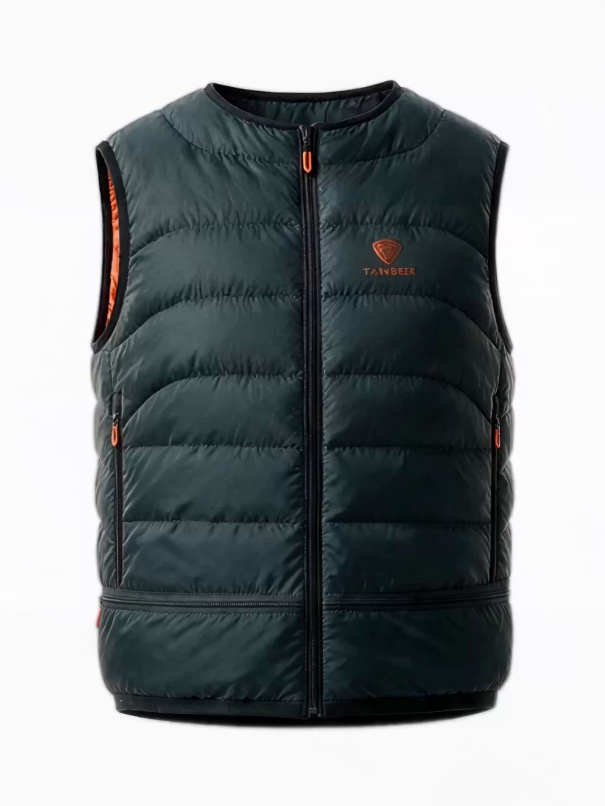
CREATOR FIT
从观众熟悉的品牌和场景切入，
再用事件与细节展开观点。
羽绒服案例：借熟悉品牌，打开新的品牌故事
HOKA 案例：用地点反差，让事件本身有看点
迪桑特案例：串起品牌、运动文化与现场画面
CASE OBSERVATIONS
THE CREATIVE IDEA
先给观众一个意外，
再追问：到了户外，够不够用？
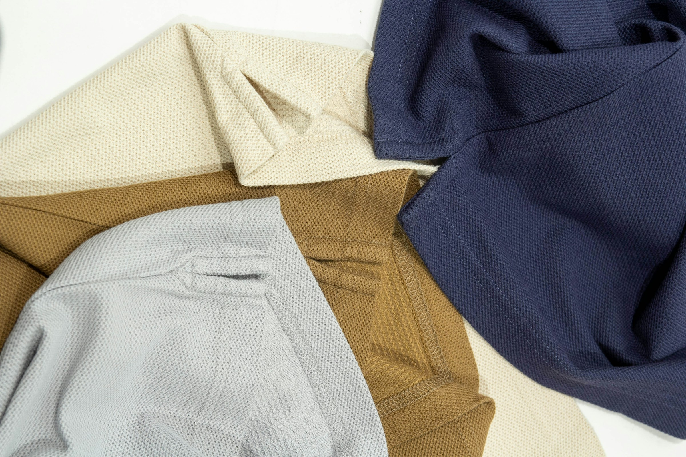
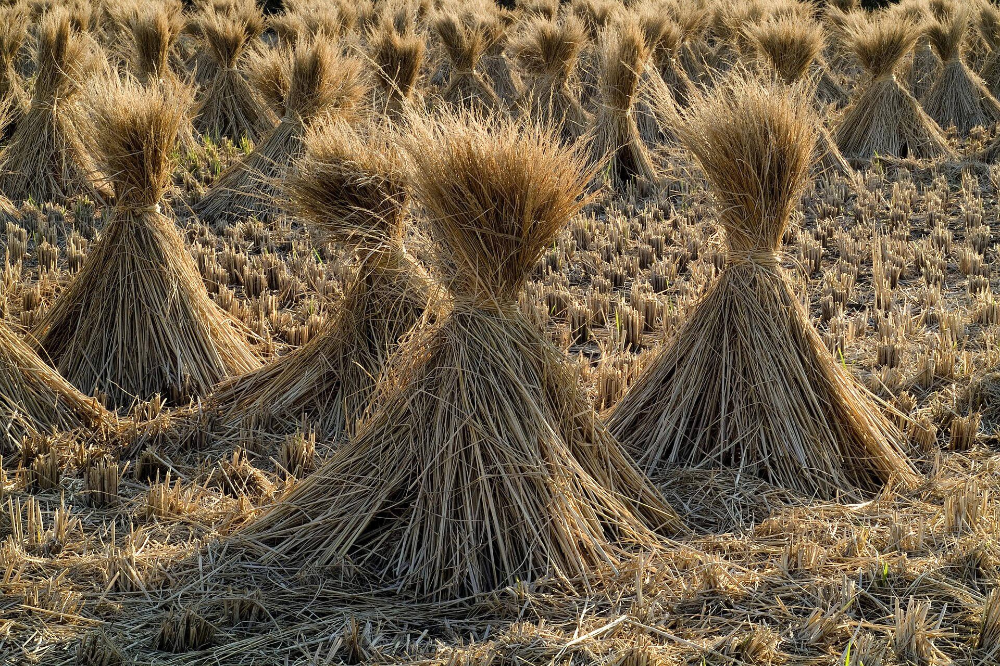
STORY FLOW
原料近景快切
引出身份反差
追问户外表现
带出品牌与 ISPO
三款面料依次展开
解释原料与功能
Selection 与 TOP 10
配对应面料信息
组合方式与峡谷风
讲多场景和排湿
与自然为友
落在材料与设计里
MATERIAL STORIES
废旧纺织品
化学回收再生尼龙
耐磨
抗撕裂
95% 海洋回收渔具
5% T2T 再生原料
防水、透湿
与舒适的平衡
秸秆制备
生物基尼龙 66
轻薄
便携
GARMENT DESIGN
全球终评入围，成衣奖项结果待公布
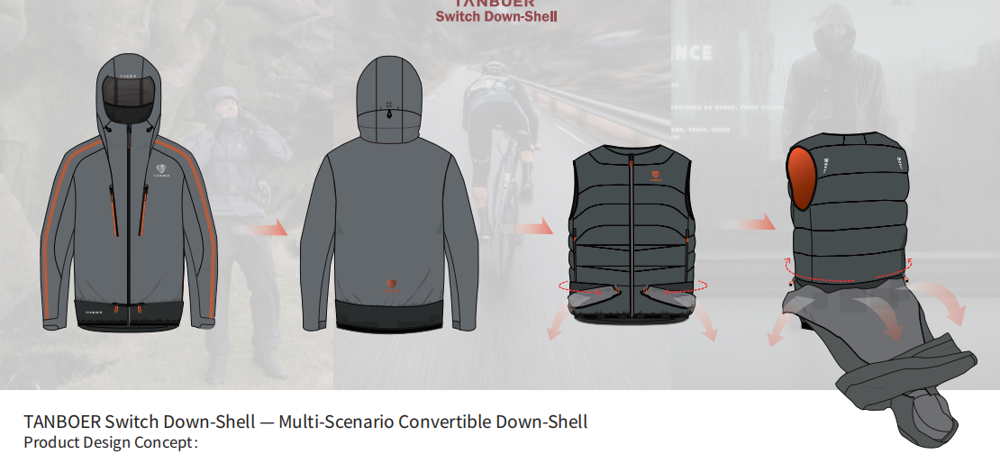
防水外壳、羽绒马甲、可收纳面罩
用组合方式应对不同场景
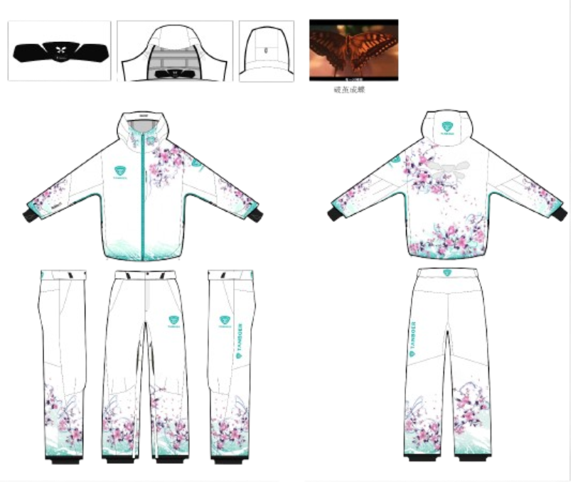
从阿勒泰峡谷风获得灵感
研究滑雪时的透气排湿
VISUAL & SOUND
原料段快切，产品段放慢。
结尾留给观点。
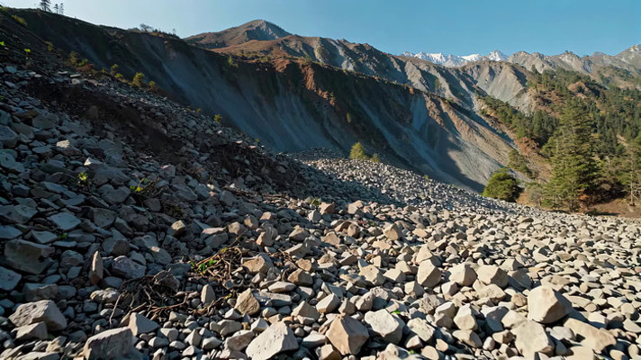
大画面交代场景
保留品牌素材的自然色
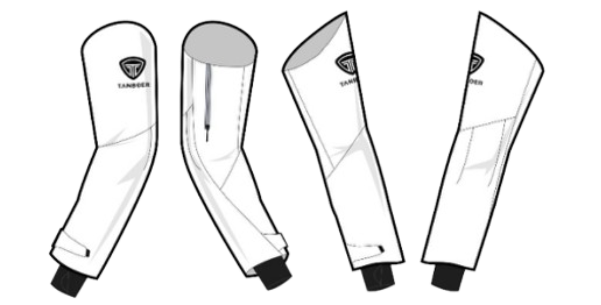
局部放大解释结构
黑白字卡突出关键词
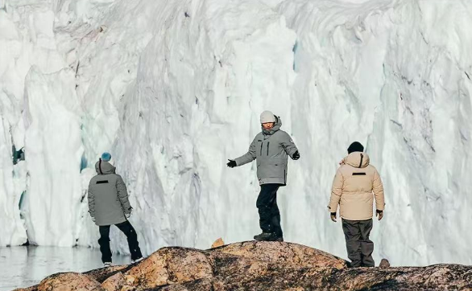
音乐给口播留出空间
用自然场景承接结尾
VOICEOVER 01
旧衣服、废渔网，甚至秸秆，怎么开始出现在户外品牌的面料研发里？
干这事的，是坦博尔。
从携手冰雪运动员李方慧，到为奥地利单板滑雪国家队提供服饰，它在冰雪圈的动作不少。
今年第五次受邀参展ISPO，它的三款功能面料，已经获得国际评审认可。那这些材料，户外表现怎么样？
先看永曜星格：废旧纺织品经过化学回收，再生成尼龙，做成耐磨、抗撕裂的功能面料。
第二款，尼龙原料中95%来自海洋回收渔具，重点是防水、透湿和舒适的平衡。
VOICEOVER 02
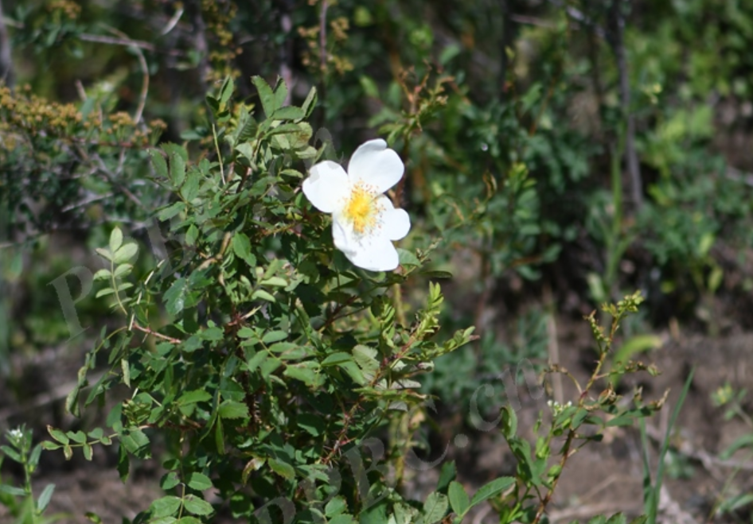
清风雾格更有意思：以秸秆制备生物基尼龙66，做成轻薄、便携的户外面料。
后两款，还进入了ISPO面料趋势评选的膜材与涂层类别前十。
两款成衣也进入全球终评：一款将防水外壳、羽绒马甲和面罩组合，应对多种场景；另一款从阿勒泰峡谷风获得灵感，研究滑雪时的透气排湿。
从原料到成衣，坦博尔把“与自然为友”，落在了具体的研发里。材料从哪里来，衣服如何应对户外，都得一起考虑。
PRODUCTION
品牌主视觉、成衣设计图
合作资料与自然场景
三款面料微距、成衣实拍
高清合作图与正式奖项海报
如安排 ISPO 拍摄，可补充
展台、面料触感与上身细节
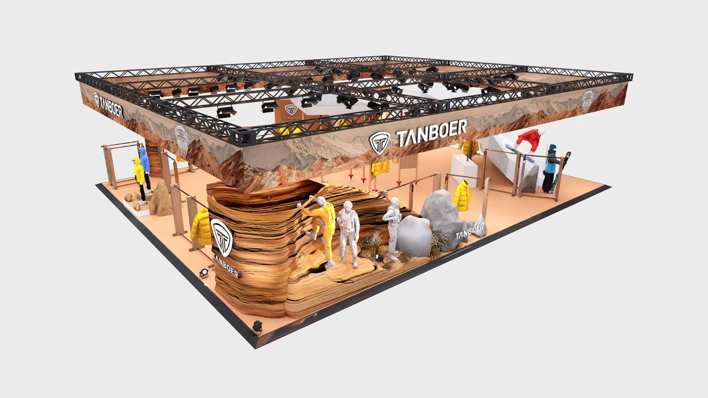
确认主线与信息取舍
匹配画面与品牌口径
看节奏与植入自然度
统一字幕、声音与包装
RELEASE VERSION
沿用当前 brief 的事实状态。
三款面料分别说明级别，
两款成衣使用“全球终评入围”。
按正式海报核对奖项名称和等级，
再替换对应口播、字幕与画面。
成衣名称同步使用确认版。
资料未确认三款面料与两款成衣一一对应，成片按已确认信息表述。
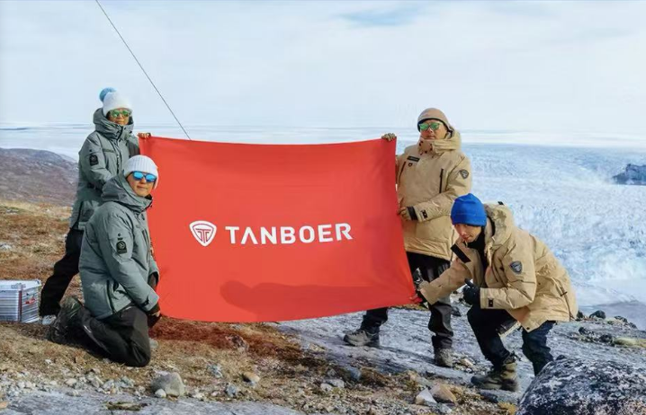
林纸巾 × 坦博尔
2026 ISPO 短视频内容提案